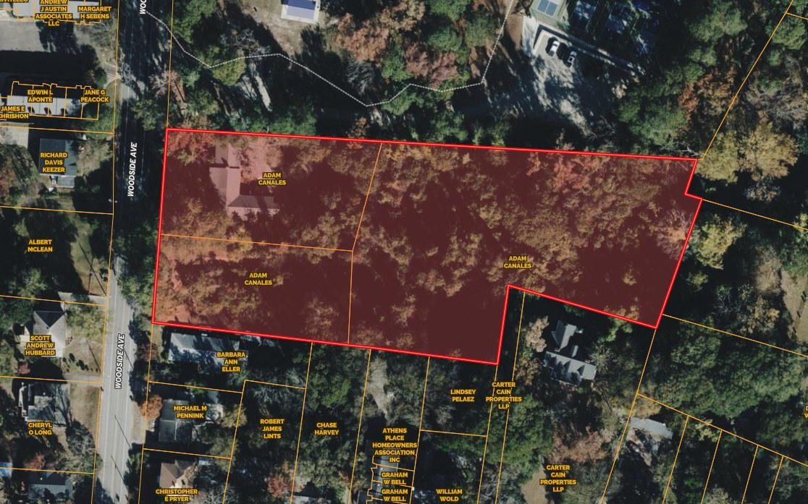
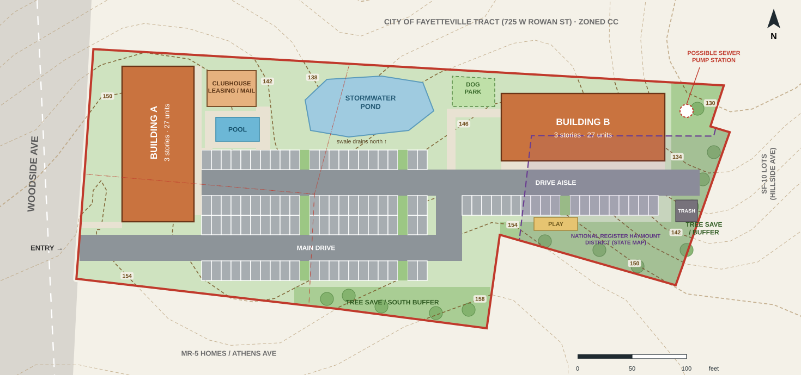

208 & 210 Woodside Ave — Haymount Multifamily Site — Broker Price Opinion

This report values three adjoining parcels owned by Adam Canales as one multifamily development site in Haymount, about a mile west of downtown Fayetteville. The site totals 2.75 acres by deed (about 2.70 acres by GIS), all zoned MR-5 (Mixed Residential 5), with about 235 feet of frontage on Woodside Ave. As instructed, it assumes the 1955 house at 210 Woodside Ave is demolished and the land is sold to a multifamily developer. Zoning allows about 54 units by right, and up to about 60–66 with the city’s sustainability bonus.
The price opinion of $385,000 covers all three parcels sold together, net of demolition. That is about $142,600 per acre of land, or about $7,130 per by-right unit. This is a broker’s opinion of value for marketing purposes, not a certified USPAP appraisal.
Subject property summary
Sources: Cumberland County records for 210 Woodside Ave, its building card, 208 Woodside Ave, the rear 1.6 ac, and the Cumberland County GIS parcel and zoning layers. The property was not inspected for this report.
Zoning — MR-5 and maximum density
| Test | MR-5 standard | Result for this site |
|---|---|---|
| Gross density | 20 units per acre; 24 if the site abuts an arterial, collector or major street. Gross acreage counts the whole parcel. A fraction of 0.6 or more rounds up. | Woodside Ave is a city-maintained local street, so 20/ac applies. 2.70 ac × 20 = 53.9, which rounds up to 54 units (55 at the deed acreage of 2.75 ac). |
| Lot area for multifamily | 15,000 SF plus 1,000 SF per unit. Where this and density conflict, the lower number of units controls. | About 102 units. This test does not control. |
| Sustainability bonus (Section 30-5.N) | Up to +10% density with 3 listed features, and +10% to +20% with 7. Up to 2 extra stories. Approved by the city’s Technical Review Committee (TRC) with the site plan. | About 59–60 units with 3 features, and up to about 64–66 with 7. Not assumed in the value. |
| Height | The greater of 6 stories or 75 ft | Not a limit for this site |
| Lot coverage | 55% maximum | About 64,700 SF |
| Setbacks | Front 25 ft (15 ft if parking is at the side or rear); side 10 ft; rear 30 ft; 20 ft between buildings | Workable on the site’s 235-ft-wide front and long rear |
| Parking | Multifamily: 1.8 spaces per unit minimum. Surface parking may not sit between the building and the street, and parking beside a building may not take more than 25% of the frontage. | About 98 spaces for 54 units, which is about 34,000 SF of parking and aisles |
| Design standards (Section 30-5.H) | Building footprint 20,000 SF maximum; façade 220 ft maximum | Two or three buildings rather than one |
| Approval path | Multifamily with 2 or more buildings or 8 or more units goes through TRC site plan review. No rezoning is needed. | A by-right administrative approval |
Sources: MR-5 dimensional standards (city file 23-3696), UDO density computation rule, UDO parking table and Section 30-5.N, City site plan approval page, City roadway layer (Woodside Ave maintenance and class). City file 26-0379, which would clarify the MR-5 dimensional table, was on the 6/22/2026 council agenda; whether it was adopted was not confirmed. A buyer should get a zoning verification letter from the city.
Realistic unit yield
- Zoning maximum: 54 units by right (55 if a survey confirms 2.75 ac), or about 60 with a three-feature sustainability bonus.
- A layout check. 54 garden units at an average of about 950 SF, in 3-story walk-up buildings, need about 19,000–20,000 SF of building footprint, split across two or three buildings. Add about 34,000 SF of parking and 6,000–8,000 SF of drives and walks, and the site is about 50–55% impervious. A stormwater pond or underground system and the required buffers take most of what is left.
- Realistic yield: about 44–54 units. The slope, the swale through the middle of the site, buffers next to the single-family lots on Hillside Ave, tree preservation and sewer depth (see below) could cost a few units. A buyer will want an engineer’s concept plan before committing to 54.
- Other products. For-rent or for-sale townhomes (about 24–30 units) would suit the neighborhood’s scale and the topography, but would yield less land value per acre. A 4-story elevator building at the bonus density (60–66 units) is allowed, but is unlikely to pencil on a site this size.
- Pricing basis. Value is set on the 54-unit by-right yield and cross-checked per acre, which covers the realistic range. No bonus density is assumed.
Test-fit site plan — 54 units
This is a broker’s test fit to check whether the 54-unit by-right yield physically fits. It is drawn to scale on the county GIS parcel lines and 2-ft contours. It is not an engineered plan, a survey or a city-reviewed design.

- Apartment buildings
- Clubhouse
- Drives and parking
- Stormwater
- Tree save and buffers
- Landscaped open space
| Item | Test fit | Rule or note |
|---|---|---|
| Units | 54 in two 3-story garden buildings (27 + 27) | The by-right maximum at 20 units per acre |
| Unit mix (illustrative) | About 18 one-bedroom, 30 two-bedroom and 6 three-bedroom units, averaging about 900–950 SF | A developer will set the final mix |
| Building footprints | Building A about 9,400 SF (66 × 143 ft). Building B about 9,300 SF (62 × 150 ft). Clubhouse about 1,500 SF | Each is under the 20,000 SF footprint limit and the 220 ft façade limit |
| Gross building area | About 56,000 SF | 3 floors over both buildings |
| Building coverage | About 17% | The MR-5 maximum is 55% |
| Parking | 103 spaces (about 1.9 per unit) | The minimum is 98 spaces (1.8 per unit). Parking sits behind Building A, not between the building and the street |
| Setbacks | Building A is about 27 ft from Woodside Ave and 10 ft from the north line. Building B is about 42 ft from the east line. The buildings are about 280 ft apart | Front 25 ft, side 10 ft, rear 30 ft, 20 ft between buildings |
| Impervious area | About 62,900 SF (54% of the site) | Roofs, pavement, parking and walks |
| Open space | About 54,200 SF (46%). This includes a pond of about 5,300 SF and about 15,500 SF of tree save and buffers | Final landscape and buffer widths are set at site plan review |
| Amenities | Clubhouse with leasing office and mail, pool, dog park, playground and a trash enclosure | Sized for a 54-unit community |
- Building A fronts Woodside Ave on the high ground, at about 150–154 ft. The parking is behind it, as the UDO requires, and one entry drive uses the south end of the 208 frontage. This puts the street-facing building roughly where the existing house stands now.
- The pond sits where the site already drains. The swale through the middle drains north to a low point of about 138 ft on the north line, so the pond goes there. An underground system would free that area for more parking or green space, at a higher cost.
- Building B steps down the rear of the site, at about 134–146 ft. That is roughly 5–20 ft below Woodside Ave, so gravity sewer to the Woodside main is unlikely. The plan shows a possible pump station at the low northeast corner. An off-site sewer easement to the north is the alternative.
- Grading. Expect retaining walls along the south edge of the parking and between the front and rear levels. The 20-plus ft of fall across the site is the main cost a developer will price.
- Historic district. The south part of Building B, the rear drive and the east tree-save area fall inside the National Register district line on the state map. This matters only if the project uses federal money, such as an FHA/HUD loan or housing tax credits, which would trigger a Section 106 review. The tree-save area also buffers the single-family lots on Hillside Ave.
- Fire access. The rear drive is a dead end of about 220 ft, so the plan shows a turnaround at its east end. The fire marshal will confirm the turnaround and hydrant spacing.
- What this shows. 54 units, with surplus parking and real amenities, fit on the site without bonus density. That supports pricing at the by-right yield. Grading and sewer are still the main risks, and they are why the realistic range in this report stays at 44–54 units. The test fit does not change the opinion of value.
Base data: Cumberland County GIS parcel lines and 2-ft contours, the NC State Historic Preservation Office district map, and the MR-5 standards cited in the zoning section above. Dimensions are approximate and taken from GIS, not a survey. A civil engineer’s concept plan and TRC review are needed before a buyer relies on any unit count.
Site constraints — topography, utilities & historic districts
- Topography. USGS 1-meter elevation data shows the land between about 131 and 154 ft, so about 22 ft of relief. The high ground is the front parcels near Woodside Ave and the middle of the rear parcel. A shallow swale runs north through the west part of the rear parcel, and the ground falls again at the east end. Typical slopes are 5–10%, with spots near 12%. That means stepped building pads, retaining walls and more grading cost, but no slopes too steep to build on.
- Flood, streams and wetlands. None mapped on the site. The closest mapped stream is an unnamed tributary of Cross Creek about 370 ft away. FEMA’s AE flood zone along Cross Creek is well off the site.
- Water and sewer. PWC water and sewer mains are mapped in Woodside Ave, about 35–45 ft from the property line. No mains cross the site. The swale and the east end of the rear parcel sit roughly 10–20 ft below Woodside Ave, so buildings at the back may need a private sewer pump station or an off-site sewer easement to the north. A developer will check this first, and it could reduce what they pay.
- Historic districts. The house at 210 and the 208 parcel are outside the mapped historic districts. The state historic office map shows about 19,600 SF (about 0.45 ac) at the east end of the rear parcel inside the Haymount National Register Historic District. National Register status by itself does not restrict a privately funded project. It does trigger a federal historic review (Section 106) if the project uses federal financing, such as an FHA/HUD loan or housing tax credits. The same map shows the local Haymount Historic District touching only about 880 SF of the rear parcel’s edge. That is likely a mapping offset, but if any part is in the local district, new construction there would need a Certificate of Appropriateness. The city’s historic preservation staff should confirm the boundary.
- Neighbor to the north. The City tract next door includes the Lions Civic Center, which the state has found eligible for the National Register. This does not restrict the subject, but it adds to the historic context a buyer will see in review.
- Trees and buffers. The site is almost all wooded. The city’s tree preservation, landscaping and buffer rules will apply, including a buffer along the single-family lots to the east. Both cost usable land.
- Demolition. Removing the 2,382 SF house, its driveway and utilities, with an asbestos survey first, is estimated at about $22,000. That is a broker estimate, not a contractor bid.
Sources: USGS elevation point query service, Cumberland County GIS (NCDOT 2-ft contours, FEMA flood, hydrology, wetlands and PWC utility layers), NC State Historic Preservation Office GIS, Haymount Historic District National Register nomination, NCDOT historic structures report (Lions Civic Center). Elevations were sampled on a grid of about 66 × 51 ft and are approximate. A topographic survey is needed.
Methodology and verification basis
- Comps were researched independently from Cumberland County sale and deed records. Each price was checked against the excise stamps on the deed, at $2 per $1,000 of price.
- The search: every MR-5-zoned parcel of 0.7 acre or more in the county that sold for a recorded price since 2021. Sales of existing apartment complexes, house sales, multi-parcel package deals and very low-price transfers were removed. That left six vacant multifamily land sales from 2024 to 2026.
- Two units of comparison: price per acre (primary) and price per by-right unit at 20 units per acre (cross-check). Adjustments are percentages and reflect the broker’s professional judgment. Time is adjusted at about +2.5% per year to November 2026.
- Demolition is deducted after the land value is set, because the comps were vacant when sold.
- Not relied on: 0 Southern Ave (2.2 ac, sold for $52,000 in 4/2026) as a likely distressed sale; the City’s 6.32-acre Catalyst I site (an option at an appraised $545,000, not a closed sale); and 1200 Glen Iris Dr (part of a larger apartment portfolio purchase). They are discussed under counter-evidence.
Comparable land sales — MR-5 multifamily sites
| Land sale (MR-5) | Sold | Price | Acres | $/acre | Units at 20/ac / $ per unit | Distance |
|---|---|---|---|---|---|---|
| L1. Berkshire Rd, Lot A (LH Land LLC) | 6/2026 | $430,000 | 2.08 | $206,731 | 42 / $10,238 | 2.6 mi |
| L2. 0 North St (McFadyen Ventures) | 7/2026 | $180,000 | 1.20 | $150,000 | 24 / $7,500 | 1.0 mi |
| L3. 0 Sam Cameron Ave (Prexaco LLC) | 1/2025 | $180,000 | 0.87 | $206,897 | 17 / $10,588 | 1.3 mi |
| L4. 6065 Cliffdale Rd | 12/2025 | $180,000 | 1.64 | $109,756 | 33 / $5,455 | 4.9 mi |
| L5. 0 Mount Rainer Rd (MR-5/CZ) | 1/2024 | $150,000 | 1.53 | $98,039 | 31 / $4,839 | 2.7 mi |
| L6. 3100 Tallywood Dr (MR-5/CZ) | 8/2025 | $500,000 | 7.23 | $69,156 | 145 / $3,448 | 2.4 mi |
Sources: Cumberland County records for L1, L2, L3, L4, L5, L6. All are vacant MR-5 land, and prices were checked against deed stamps. L5 and L6 are conditional MR-5 (MR-5/CZ) zoning, which ties them to an approved plan. L6 carried a minor outbuilding. Unit counts apply the 20-per-acre gross density and rounding rule for comparison; they are not approved plans. Distances are straight-line from the subject.
Adjustment matrix
Each sale is adjusted to the subject as vacant land: about 2.70 acres of MR-5 land in Haymount, about 54 by-right units, wooded, about 22 ft of relief with a central swale, 235 ft of frontage on a local street, and a rear that may need sewer pumping. Demolition is deducted separately below.
| Comp property | Unadj. $/acre | Net Adj. % | What was adjusted | Adj. $/acre |
|---|---|---|---|---|
| L1. Berkshire Rd, Lot A | $206,731 | −20% | Time: recent (0%). Location: established west-central residential area near Raeford Rd, similar to Haymount for apartment rents (0%). Size: about 75% of the subject’s area; smaller sites sell for more per acre (−5%). Site: the subject has about 22 ft of relief, a swale, possible sewer pumping and a long rear behind narrow frontage (−15%). | $165,385 |
| L2. 0 North St | $150,000 | 0% | Time: recent (0%). Location: older mixed-use area near Ramsey St, below Haymount for rents and buyer appeal (+15%). Size: smaller (−5%). Site: subject topography and sewer (−10%). | $150,000 |
| L3. 0 Sam Cameron Ave | $206,897 | −15% | Time: about 1.9 years ago (+5%). Location: Campbell Ave area south of downtown, below Haymount (+10%). Size: about a third of the subject’s area, a small infill lot that sells for much more per acre (−20%). Site: subject topography and sewer (−10%). | $175,862 |
| L4. 6065 Cliffdale Rd | $109,756 | +7% | Time: about 1 year ago (+2%). Location: suburban west Cliffdale Rd. Its arterial frontage would allow 24 units per acre, but it lacks Haymount’s close-in appeal (+15%). Size: smaller (−5%). Site: subject topography (−5%). | $117,439 |
| L5. 0 Mount Rainer Rd | $98,039 | +12% | Time: about 2.8 years ago (+7%). Location: north Fayetteville subdivision setting, below Haymount (+15%). Size: smaller (−5%). Site: subject topography (−5%). Zoning: conditional MR-5 with a set plan, offset by its approval status (0%). | $109,804 |
| L6. 3100 Tallywood Dr | $69,156 | +33% | Time: about 1.3 years ago (+3%). Location: Tallywood area off Raeford Rd, below Haymount (+10%). Size: about 2.7 times the subject’s area, a bulk purchase that sells for much less per acre (+25%). Site: subject topography (−5%). | $91,977 |
Adjusted range: about $92,000–$176,000 per acre. Median: about $133,700. Weighted average: about $144,300 per acre (L1 25%; L2 and L3 20% each; L4 15%; L5 and L6 10% each). The two 2026 sales and the closest infill sale get the most weight. The concluded rate is $145,000 per acre.
Value analysis & opinion of value
| Approach | Basis | Indication |
|---|---|---|
| Price per acre (primary) | 2.70 ac × $145,000 | $391,500 |
| Price per by-right unit (cross-check) | 54 units × $6,500–$8,500 (comps L1–L5 unadjusted: $4,839–$10,588) | $351,000–$459,000 (midpoint $405,000) |
| Land value as if vacant | Reconciled | About $400,000 |
| Less demolition of the house at 210 | 2,382 SF house, driveway and utilities, with an asbestos survey | −$22,000 |
| Indicated value, all three parcels, net of demolition | About $378,000–$385,000 | |
| County land values, all three parcels | $105,000 + $135,000 + $144,000 | $384,000 (reference) |
| Owner’s 2021 purchase, with the house | Book 11088, Page 590 | $220,000 (reference) |
The broker price opinion of $385,000 is for all three parcels sold together to a multifamily developer, with the buyer removing the house. The range of $350,000–$425,000 runs from a 44-unit yield, or a buyer who prices in sewer pumping, at the low end, to a clean 54-unit concept plan and strong Haymount demand at the high end. The result is close to the county’s land values ($384,000), but well below the county’s total value of $655,900, because a developer pays nothing for a house it plans to tear down.
Counter-evidence & upside
- The house has value a developer will not pay for. The county values the house at 210 at $221,499, and $406,900 with its 0.69-acre lot. Under this report’s demolition assumption, that value is lost. A split may net more: keep or sell the house on its own lot, and sell 208 plus the rear 1.6 ac (about 2.06–2.08 ac and about 42 units, reached through 208’s 120 ft of frontage) as a smaller multifamily site, roughly $280,000–$300,000 at the same rates. That house value has not been appraised here. It would need a separate residential opinion and a check that 42 units still work on the narrower site.
- Weak sales for small sites in weaker areas. 0 Southern Ave in Massey Hill, 2.2 ac of MR-5 land listed at $170,000 with a 16-townhome concept, sold for $52,000 (about $23,600 per acre) in 4/2026. L5 and L6 sold for under $100,000 per acre. Buyers for small multifamily sites are few, and many local apartment builders want larger, flatter suburban tracts.
- Public price points are lower. The City’s Catalyst I site, 6.32 acres for an 84-unit affordable project, carries an appraised value of $545,000, about $86,000 per acre or $6,500 per unit.
- Site costs. The slope, the central swale, possible sewer pumping, tree preservation, the buffer to the single-family lots, and a historic review if federal financing is used all add cost and time. A buyer may ask for a long due-diligence and approval period.
- Neighborhood reaction. A 50-plus-unit project next to large single-family lots on Hillside Ave and the National Register district may draw opposition. The project is by right, so it does not need a public hearing, but delays are still possible.
- Upside: Haymount scarcity. Multifamily-zoned infill land this size, close to downtown and Haymount, rarely comes up. Existing Haymount apartment properties have traded actively: 412 Oakridge Ave (1.9 ac) sold for $4.0 million in 8/2026 and 615 Oakridge Ave (2.3 ac) for $2.19 million in 2/2025, per county records.
- Upside: bonus density. Three sustainability features (for example, Energy Star on most units, reflective paving and a trail connection) could raise the yield to about 60 units. At $7,500 per unit, the extra 6 units are worth about $45,000 to a buyer who plans for them.
Sources: Redfin 28306 land listings (0 Southern Ave); county record for 0 Southern Ave; City of Fayetteville release on the Catalyst I site; county records for 412 Oakridge Ave and 615 Oakridge Ave.
Listing / commission terms
Sale listing
8% co-brokered — of the gross sale price when a cooperating broker procures the buyer, split under standard commercial co-brokerage practice.
6% in-house — when Grant-Murray Real Estate, LLC procures the buyer directly.
Offering approach
List all three parcels together at about $425,000–$439,000, leaving room to negotiate toward the $385,000 opinion. Market to local and regional apartment and townhome builders, infill developers and Haymount investors. Feature the by-right MR-5 density (54 units, about 60 with the bonus), the Haymount location and the City recreation land next door. Before launch, order a boundary and topographic survey, ask PWC to confirm sewer service to the rear, get written confirmation of the historic district boundary from city staff, and consider a simple engineer’s concept plan, which can support a price toward the top of the range. Decide whether to offer the house separately.
Listing broker: Patrick Murray, CCIM, SIOR, Grant-Murray Real Estate, LLC. Final listing terms, duration and marketing-cost provisions will be set out in a separate written listing agreement.
Limitations
- Demolition assumption. As instructed, the house at 210 Woodside Ave is assumed to be demolished, and its value as a residence is not included.
- No inspection or survey. The property was not inspected. Acreage (2.75 ac deed, about 2.70 ac GIS), frontage, topography and utility locations come from county, state and federal GIS and are approximate.
- Unit yield. The unit counts are a zoning-based estimate, not an engineered plan or a city approval. Actual yield depends on TRC review, stormwater, tree preservation, buffers and sewer design.
- Zoning and historic status. MR-5 zoning and historic district boundaries come from public GIS and the UDO. The status of city file 26-0379 and the local historic district edge were not confirmed with city staff.
- Comp data. Comp sizes and prices come from Cumberland County records and deed stamps and were not confirmed with buyers or sellers. The topography and utilities of the comps were not checked.
- No title search or environmental review was performed. An older house may contain asbestos or lead paint that affects demolition cost.
- This is a broker’s opinion of value for marketing purposes, prepared by Grant-Murray Real Estate, LLC. It is not a certified USPAP appraisal.
Prepared by
Patrick Murray, CCIM, SIOR
Principal / Broker in Charge
Grant-Murray Real Estate, LLC
150 N. McPherson Church Rd
Fayetteville, NC 28303
O: 910.829.1617
patrick@grantmurrayre.com
grantmurrayre.com
Prepared for
Adam Canales
Owner of record
210 Woodside Ave
Fayetteville, NC 28301
This Broker Price Opinion (BPO) is prepared by Patrick Murray, CCIM, SIOR, of Grant-Murray Real Estate, LLC. It is not an appraisal and is not a certified valuation under USPAP. The conclusion uses the sales comparison approach on independently researched closed land sales, with a per-unit cross-check. Adjustments reflect the broker's professional judgment.